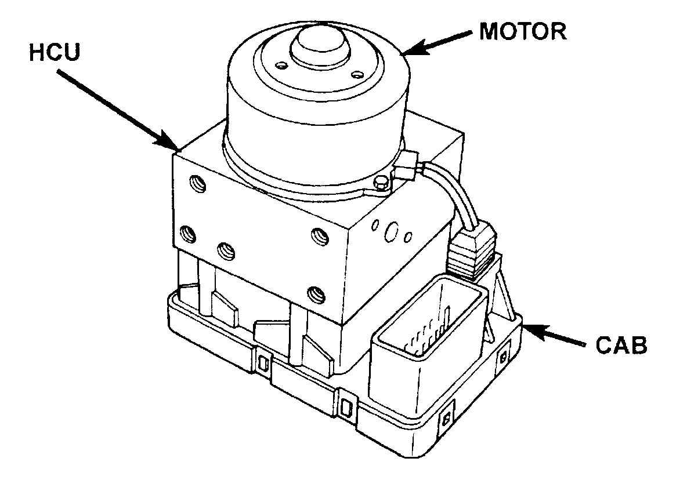

Electronic Brake Control Module: Description and Operation
CONTROLLER ANTILOCK BRAKESController Antilock Brakes (CAB):

The Controller Antilock Brake (CAB) is a microprocessor-based device that monitors wheel speeds and controls the antilock functions.
The CAB contains dual microprocessors. A logic block in each microprocessor receives identical sensor signals. These signals are processed and compared simultaneously.
The CAB monitors wheel speed sensor inputs continuously while the vehicle is in motion. However, the CAB will not activate any ABS components as long as sensor inputs and the acceleration switch indicate normal braking.
The CAB is mounted to the HCU and operates the ABS system separate from other vehicle electrical circuits. CAB voltage source is through the ignition switch in the RUN position.
The primary functions of the CAB are:
^ monitor wheel speeds
^ detect wheel locking tendencies
^ control fluid pressure modulation to the brakes during antilock stop operation
^ monitor the system for proper operation
^ provide communication to the DRB while in diagnostic mode
^ store diagnostic information in non-volatile memory
The CAB continuously monitors the speed of each wheel. When a wheel locking tendency is detected, the CAB will command the appropriate valve to modulate brake fluid pressure in its hydraulic unit. Brake pedal position is maintained during an anti lock stop by being a closed system with the use of 3 accumulators. The CAB continues to control pressure in individual hydraulic circuits until a wheel locking tendency is no longer present. The CAB turns on the pump/motor during an antilock stop.
The antilock brake system is constantly monitored by the CAB for proper operation. The CAB contains a self check program that disables the antilock system and illuminates the ABS warning light when a system fault is detected. If the antilock function is disabled, the system will revert to standard base brake system operation.
The CAB inputs include the following:
^ four wheel speed sensors
^ stop lamp switch
^ ignition switch
^ battery voltage
^ diagnostic communication ISO/K
^ G switch (acceleration switch)
The CAB outputs include the following:
^ six valve/solenoid drivers
^ pump/motor actuation
^ ABS warning lamp actuation
^ diagnostic communication
Faults are stored in a diagnostic program memory and are accessible with the DRB scan tool.
ABS faults remain in memory until cleared. or until after the vehicle is started approximately 50 times. Stored faults are not erased if the battery is disconnected.